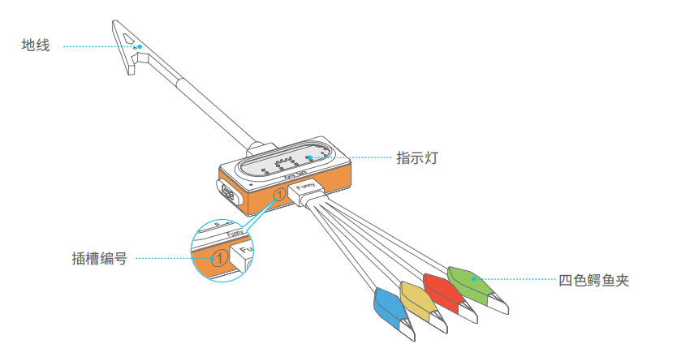

funny_touch — 触摸开关(四控)模块¶
funny_touch 模块的主要功能与函数
触摸开关(四控)使用说明¶
触摸开关可以连接导电的物品（如香蕉、水），将它变成触摸开关。通过检测四色鳄鱼夹和地线的导通状态，实现简单有趣的交互效果。
如何使用：
- 将四色鳄鱼夹插到插槽 1，地线插到插槽 2。
- 用鳄鱼夹夹住一个导电物体。
- 抓住地线的金属夹子，同时用另一只手触摸导电物体，触摸开关相应指示灯亮起，模块将发出一个触发信号。
注：鳄鱼夹比较锋利，请不要用四色鳄鱼夹或地线夹子夹自己或他人，否则可能会造成伤害。
功能相关函数¶
-
funny_touch.is_red_touched()¶ 四色鳄鱼夹的红色鳄鱼夹是否有被触摸（或者间接触摸），返回的结果是
True：被触摸了， 或者False: 未被触摸。
-
funny_touch.is_green_touched()¶ 四色鳄鱼夹的绿色鳄鱼夹是否有被触摸（或者间接触摸），返回的结果是
True：被触摸了， 或者False: 未被触摸。
-
funny_touch.is_yellow_touched()¶ 四色鳄鱼夹的黄色鳄鱼夹是否有被触摸（或者间接触摸），返回的结果是
True：被触摸了， 或者False: 未被触摸。
-
funny_touch.is_blue_touched()¶ 四色鳄鱼夹的蓝色鳄鱼夹是否有被触摸（或者间接触摸），返回的结果是
True：被触摸了， 或者False: 未被触摸。
程序示例：¶
import codey
import time
import event
import neurons
@event.start
def start_cb():
while True:
if neurons.funny_touch.is_blue_touched():
print("blue touched")
if neurons.funny_touch.is_red_touched():
print("red touched")
if neurons.funny_touch.is_green_touched():
print("green touched")
if neurons.funny_touch.is_yellow_touched():
print("yellow touched")
time.sleep(0.1)